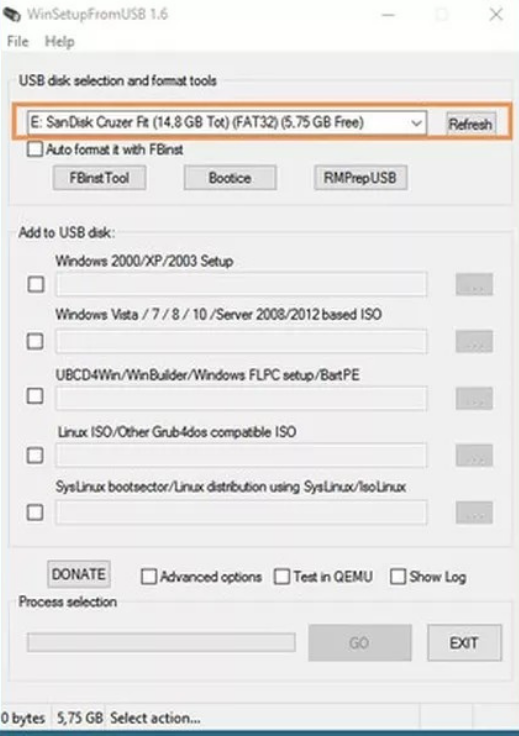
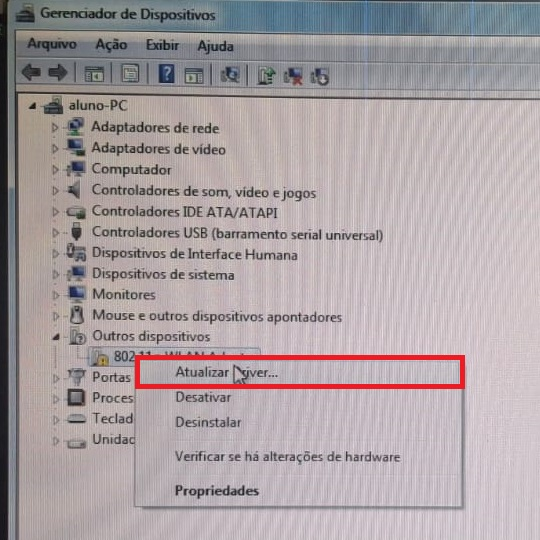
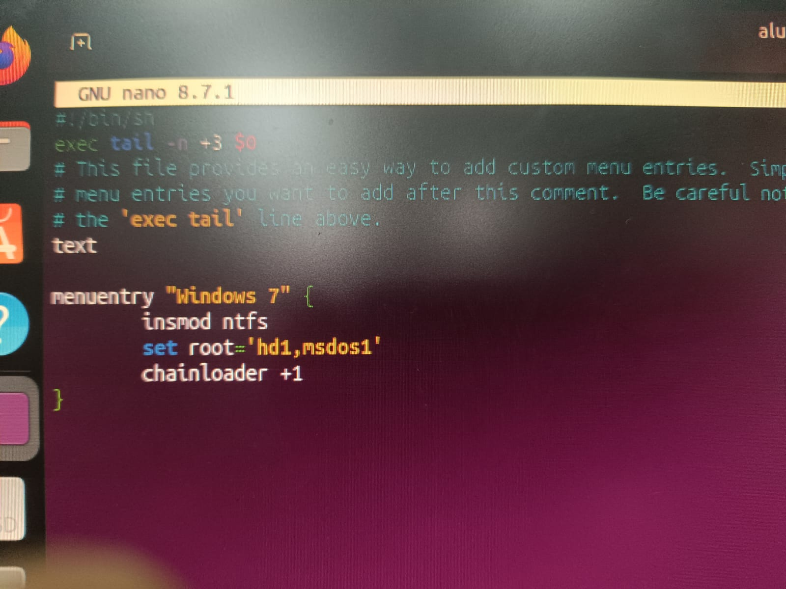
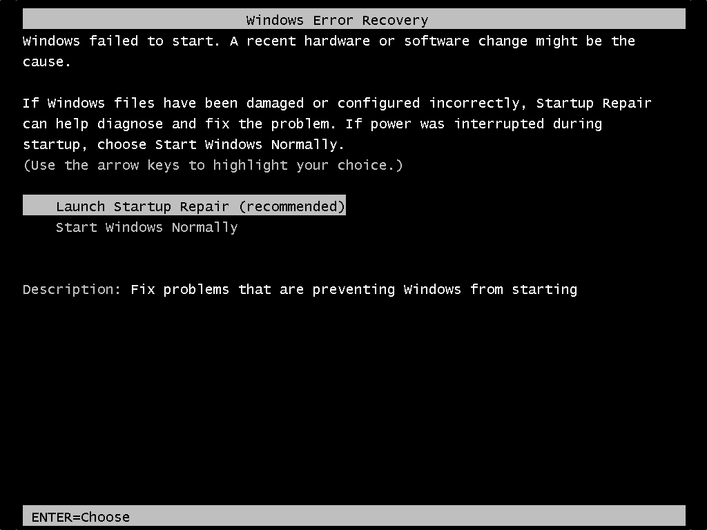

Problemas de software
Problemas de software que encontramos durante a montagem e manutenção dos computadores, com as causas e como resolvemos cada um.

Erro de Boot do Windows XP no Rufus e Ventoy
O Windows XP não instalava pelo Rufus nem pelo Ventoy. Resolvemos usando o WinSetupFromUSB, que faz o pen drive simular um disco.
Ver solução ›
Inacesso a internet
O computador não acessava a rede sem fio. Resolvemos instalando o driver da placa de rede Realtek pelo Gerenciador de dispositivos.
Ver solução ›
Menu de boot não aparece
O computador iniciava direto em um sistema, sem mostrar o menu de escolha. Resolvemos com o update-grub no Ubuntu e o EasyBCD no Windows.
Ver solução ›
Sistema operacional corrompido
Arquivos essenciais do sistema danificados por desligamento incorreto, vírus ou HD com defeito. O computador não inicia ou fica travando.
Ver solução ›
Drivers desatualizados ou corrompidos
Depois de formatar, peças antigas ficam sem driver e param de funcionar. Resolvemos baixando o driver certo no site do fabricante.
Ver solução ›Windows sem som
O som parava de sair, normalmente depois de conectar fone Bluetooth, monitor HDMI ou caixa de som. Resolvemos escolhendo a saída certa, reiniciando o serviço de áudio ou reinstalando o driver.
Ver solução ›Espaço em disco ficando cheio sozinho
O disco C: enchia sem motivo por causa de arquivos temporários e pontos de restauração. Resolvemos com a Limpeza de Disco, limpando a pasta %temp% e ativando o Sensor de Armazenamento.
Ver solução ›Loop de reparo automático
O Windows tentava se reparar sozinho, falhava e reiniciava sem parar. Resolvemos pelas Opções Avançadas, com Reparo de Inicialização, Restauração do Sistema ou os comandos bootrec.
Ver solução ›Arquivos ou pastas que não podem ser excluídos
O arquivo continuava aberto por algum processo em segundo plano. Resolvemos finalizando a tarefa no Gerenciador de Tarefas (Ctrl + Shift + Esc).
Ver solução ›Tutoriais
- Como criar um pen drive de boot com o Ventoy
- Como criar um pen drive de boot com o Rufus
- Como criar um pen drive de boot direto com a ISO
- Como apagar o boot do pen drive e voltar ao normal